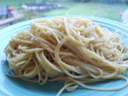

Buttery Spaghetti

Description
Pasta is one of the simplest yet tastiest dishes that anyone can make!
For this recipe, you may choose any shape of pasta you please, but we decided
to choose spaghetti. If you are vegan, you may enjoy this dish as well,
as instead of butter, you can use an equal portion of olive oil, and it will
taste just as good!
Ingredients
- Spaghetti (1 pound)
- Salt (15g)
- Parmasian cheese (1 cup)
- Butter (3 tbsp)
Steps
- Add a half gallon water to a medium-sized pot, and bring to a rolling boil
- Add salt to the boiling water
- Add spaghetti to the boiling water
- Boil spaghetti for 8-12 minutes, stir periodically
- Drain water completely
- Stir butter into the spaghetti
- Sprinkle parmasian cheese on top of the spaghetti